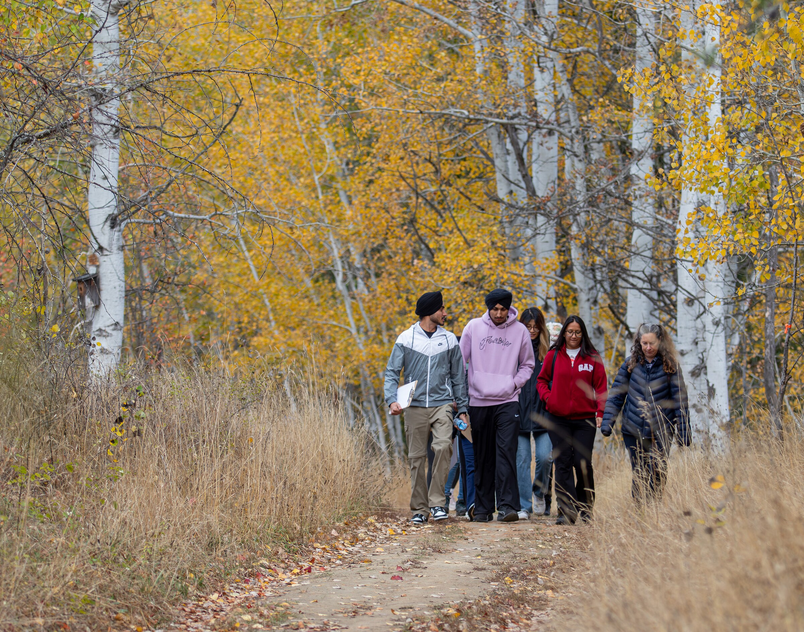

MAJORS
2026 웨스트 쿠트니 RCIP
어떤 전공을
골라야 할까?
특히 이 두 직군은
+5 가산점
고용주 인원 제한 없음
? + ?
NOC 33102
요양보호사
NOC 42202
보육교사
RANK
1
Health Care Assistant Diploma
캐슬가 · 2년 · 요양보호사 직결
Health Care
RANK
2
Early Learning and Childcare
캐슬가 · 2년 · 보육교사 직결

Early Learning
SELKIRK COLLEGE
두 직군으로
바로 이어지는
2년제 공립
디플로마
AA Canada가 이 학교를 추천하는 이유
AA CANADA · 캐나다 유학 · 이민
셀커크 × RCIP
상담하세요
전화 02-567-4345
카카오톡 canlog
본편에서 자세히 보기 →
그렇다면 어떤 전공을
선택해야 할까요?
특히 두 직군에는 5점
가산점이 따로 붙고,
고용주 한 곳이 추천받을 수 있는
인원 제한도 없습니다.
바로 요양보호사,
그리고 보육교사입니다.
그래서 저희가 추천하는
1순위 전공은,
헬스케어 어시스턴트 디플로마입니다.
2순위는 얼리 러닝 앤 차일드케어,
보육교사 디플로마입니다.
그리고 셀커크 컬리지에는,
이 두 직군으로 바로
이어지는 2년제 공립
디플로마가 있습니다.
이 조합이,
저희가 이 학교를 계속
추천하는 이유입니다.